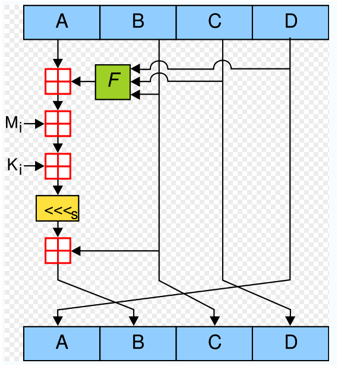
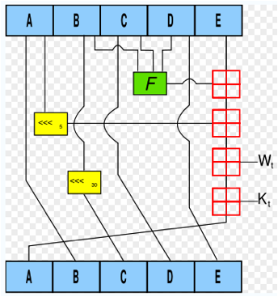
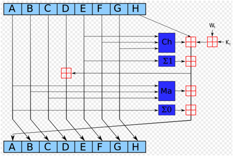

| เนื้อหา 5. Hash | |
| 5.1 MD5 5.2 SHA |
|
5. Hash
การเข้ารหัสแบบ Hash (Cryptographic hash) หมายถึง การแปลงรูปแบบของข้อมูลที่รับเข้ามาให้เป็นข้อมูลที่ถูกย่อย (Message Digest) ไม่ว่าข้อมูลต้นฉบับจะมีขนาดเล็กหรือใหญ่เท่าใดก็ตามก็จะถูกย่อยให้อยู่ในรูปแบบที่มีขนาดคงที่ ดังนั้นจึงไม่สามารถทำกระบวนการย้อนกลับเพื่อให้กลายเป็นข้อมูลต้นฉบับได้ จะทำได้เพียงแค่ตรวจสอบว่าข้อมูลที่ให้มาแต่ละครั้งเหมือนกันหรือไม่ ฟังก์ชั่น Hash ที่สำคัญ ๆ ได้แก่ MD4, MD5, SHA-1 และ SHA-2
ตัวอย่างเช่นผู้ใช้ thawatchai ตั้งรหัสผ่านเป็นคำว่า abc123 หากเก็บรหัสผ่านลงบน Database โดยตรงจะทำให้ผู้ใดก็ตามที่เข้าถึงฐานข้อมูลได้ ทราบรหัสผ่านที่เก็บไว้ (ผู้ที่เข้าถึงฐานข้อมูลได้เช่นผู้ดูแลระบบ ผู้ดูและฐานข้อมูล และแฮกเกอร์ที่เจาะเข้ามาทางเว็บไซต์ด้วยวิธีการพิเศษตัวอย่างเช่น SQL Injection)
หากทำการย่อยรหัสผ่านด้วยฟังก์ชั่น Hash เช่นใช้ MD5 ย่อยรหัสผ่าน abc123 ได้เป็น e99a18c428cb38d5f260853678922e03 แล้วจึงเก็บค่าแฮชนั้นลงใน Database จะทำให้การเปิดดูรหัสผ่านใน Database โดยตรง ไม่พบรหัสผ่าน abc123 แต่จะพบเพียงค่าแฮช (e99a18c428cb38d5f260853678922e03)
ซึ่งเป็นการป้องกันการเปิดเผยรหัสผ่านและไม่สามารถใช้ค่าแฮชเพื่อคำนวณย้อนกลับไปเป็นรหัสผ่านได้ ในการตรวจสอบสิทธิ์ผู้ใช้แต่ละครั้งสำหรับการล็อกอินก็สามารถทำได้โดยนำรหัสผ่านที่ผู้ใช้ส่งผ่านฟอร์มล็อกอินเข้ามา แล้วนำไปผ่านฟังก์ชั่น Hash เช่น MD5 จากนั้นก็นำค่าแฮชทื่ได้มาเทียบกับค่าแฮชที่เก็บไว้ใน Databse หากมีค่าตรงกันก็แสดงว่ารหัสผ่านถูกต้อง ไฟล์รหัสผ่านของ Linux (/etc/shadow) ก็แฮชรหัสผ่านด้วย MD5 เช่นกัน นอกจากนั้นก็ยังพบเห็นการประยุกต์ใช้การแฮชรหัสผ่านใน Web Application ต่าง ๆ เช่น Moodle และ Mambo
5.1 MD5
อัลกอริทึม MD5 คิดค้นโดย Ron Rivest ซึ่งเป็น 1 ใน 3 คนที่คิดค้น RSA

ถึงแม้ MD5 จะได้รับความนิยมอย่างมาก และได้มีการนำมาใช้แพร่หลายเช่นนำมาใช้สร้าง Digital Signature ในระบบ e-commerce อย่างไรก็ตาม MD5 ก็ถูกเบรคได้โดยนักคณิตศาสตร์หญิงชาวจีน (Professor Dr. Xiaoyun Wang) ในปี 2004 โดยใช้เครื่องซูเปอร์คอมพิวเตอร์ IBM P690 และใช้เวลาแคร็ก 1 ชั่วโมงก็สามารถเบรคได้ หลังจากนั้นก็มีคนอ้างว่าสามารถใช้เครื่องคอมพิวเตอร์ Notebook ความเร็ว 1.6 GHz เบรค MD5 ได้ภายในเวลา 8 ชั่วโมง
ตัวอย่างการใช้งานคำสั่ง md5 บน Linux
$ md5 exim-4.43.tar.bz2
MD5 (exim-4.43.tar.bz2) = f8f646d4920660cb5579becd9265a3bf
$

5.2 SHA
SHA0 และ SHA1 ได้ถูกพัฒนาให้มีความแข็งแรงกว่า MD5 โดยได้พัฒนาจาก MD5 เดิมให้ Output มีความเป็น Random สูงกว่า และมี Collision น้อยกว่าเพื่อลดโอกาสในการถูกแคร็กได้ อัลกอริทึมของ SHA1

SHA0 และ SHA1 ก็ถูกเบรคได้โดยนักคณิตศาสตร์หญิงชาวจีน (Professor Dr. Xiaoyun Wang) คนเดียวกันกับที่เคยเบรค MD5 ได้ ดังนั้นปัจจุบันนี้ความหวังจึงอยู่ที่ SHA2 ซึ่งยังไม่มีใครเบรคได็ อัลกอริทึมของ SHA2
